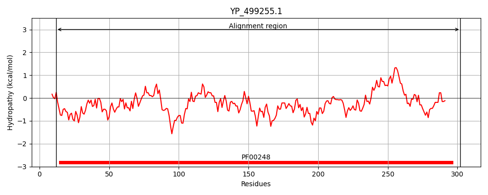
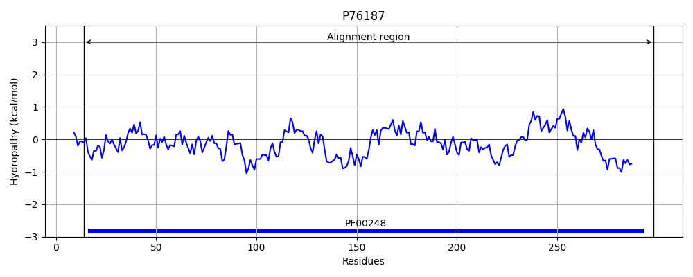
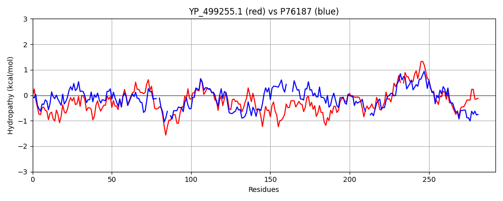

Hit Accession: P76187
Hit TCID: 8.A.5.1.7
Hit Description: gnl|BL_ORD_ID|11445 gnl|TC-DB|P76187|8.A.5.1.7 Oxidoreductase YdhF OS=Escherichia coli (strain K12) GN=ydhF PE=1 SV=2
Mach Len: 292
e:0.000000
Query TMS Count : 0
Hit TMS Count: 0
TMS-Overlap Score: 0.000000
Predicted Substrates:None
BLAST Alignment:
Score: 628 , Bit scores: 246 bits, E-value: 7.1e-81, Alignment length: 292, Percentage identity: 44
Query: 12 FSRLVQGFWRANEWKMTAKELNYFINELVERGITTMDHADIYGDYQCESLFGNALDLSPELRNKIQIVTKCGIILPSKQFDFTNGHRYDLSSKHIVKSVEQSLINLNVDYLDSLLIHRPSPLMDPEQVADALTKLVKQGKLKSFGVSNFNHSQYQLLNQYIMKERLHISINQLELSPYHVDSLQDGTMDSMYQNHVQIMAWSPFAGGKIFDKEDIKAQRIMKVVQSIADKYGV-SDTAVMIAWLVKIPHRIMPILGTSQLKRIDQAIEGLQLNLDDQSWFDIYTAIIGQDIP 302
FSR V G+WR +W M+A++L FI E ++ G+TT+DHADIYG YQCE+ FG AL L+P LR +++IV+KCGI +++ + GH Y HI+KS EQSLINL D+LD LLIHRP PLMD ++VADA L + GK++ FGVSNF +Q+ LL + ++ NQ+E+SP H L DGT+D + Q V+ MAWS GG++F+ D Q + + +A++ S V+ AW++++P + +PI+G+ +++R+ A+E L + Q WF I A +G D+P
Sbjct: 14 FSRFVMGYWRLMDWNMSARQLVSFIEEHLDLGVTTVDHADIYGGYQCEAAFGEALKLAPHLRERMEIVSKCGIATTARE-ENVIGH-YITDRDHIIKSAEQSLINLATDHLDLLLIHRPDPLMDADEVADAFKHLHQSGKVRHFGVSNFTPAQFALLQSRL---PFTLATNQVEISPVHQPLLLDGTLDQLQQLRVRPMAWSCLGGGRLFN--DDYFQPLRDELAVVAEELNAGSIEQVVYAWVLRLPSQPLPIIGSGKIERVRAAVEAETLKMTRQQWFRIRKAALGYDVP 298 | Protein Hydropathy Plots: |
|---|
|  |  |
Pairwise Alignment-Hydropathy Plot:
|
|---|
|  |